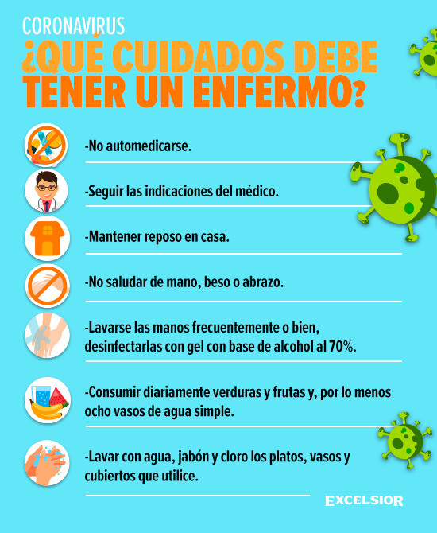

Cuidados
- Lavarse las manos
- Limpieza de superficies
- Cuidado al toser o estornudar
- Si es mayor, evitar las áreas muy concurridas
- Quedarse en casa si se está enfermo
Lávese las manos regularmente con un desinfectante a base de alcohol o con agua y jabón. No tocarse la cara después de tocar superficies contaminadas o a personas enfermas es una de las formas en que se puede transmitir el virus. Al limpiar las manos se puede reducir el riesgo.
Limpie regularmente con desinfectante las superficies como bancos de cocina y escritorios de trabajo .
Si tose o estornuda, hágalo en la manga o use un pañuelo de papel. Deseche el pañuelo inmediatamente en un contenedor de basura cerrado y luego lávese las manos.
Si tiene más de 60 años o si tiene una afección subyacente como una enfermedad cardiovascular, una afección respiratoria o diabetes, corre un mayor riesgo de desarrollar una enfermedad grave. Podría tomar precauciones adicionales para evitar áreas abarrotadas o lugares donde pueda interactuar con personas enfermas.
Si no se siente bien, quédese en casa y llame a su médico o profesional de salud local. Él o ella le hará algunas preguntas sobre sus síntomas, dónde ha estado y con quién ha tenido contacto. Esto ayudará a asegurarse de que reciba el asesoramiento correcto, se dirija al centro de salud adecuado y evitará que infecte a otros.